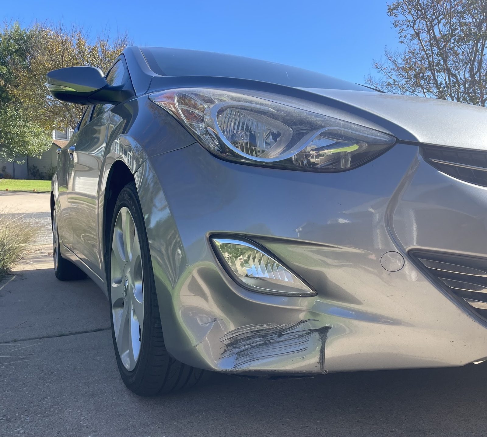

Collision and body repair
Side damage, dented panels and crumpled bumpers repaired, with paint matched.
- Side damage
- Bumpers
- Dents and scratches
NAS Auto Collision · Creedmoor
Nas Auto Collision serves Creedmoor from Austin.
Nas Auto Collision is based in Austin and works with customers from Creedmoor. Call (512) 831-2805 to ask about timing and directions.

Side damage, dented panels and crumpled bumpers repaired, with paint matched.

Scratched doors, small dents and hail damage brought back to a clean finish.

Engine, brake and electrical diagnostics, plus service for business vehicles.
4.9 stars · 289 Google reviews
I had an amazing experience with Nas Auto Collision. From the very beginning, they were incredibly professional, honest, and helpful throughout the entire process. My car had serious side damage, and they kept me updated on every detail while making sure the repair was done as quickly and smoothly as possible. The quality of the work honestly exceeded my expectations.
We had a great experience with NAS Autobody. John was professional, honest, and very easy to work with. His team did an excellent job repairing our Mazda CX-50, and the quality of the work was outstanding. John took the time to walk us through everything and answered all of our questions. I highly recommend NAS Autobody to anyone needing body repairs.
Extremely smooth and well priced experience. I have come here before for smaller scratches and dents, and they’ve always been helpful - including with the best pricing. This was our first experience with bigger damage, and they did a great job with the repair. The whole side looks brand new, and the owner even took care of a couple other scratches here and there.
Best repair shop I ever worked with! The ownerJohn is a very professional and kind car expert. And the technician in the yard is smart. I got my repair job done very quickly and excellent. I’ll recommend this place to my friends 100% for sure.
Highly recommend this auto repair shop! The staff are super friendly, they’re responsible with their work, the prices are reasonable, and the efficiency is amazing. I got my car back in less than a week! I’ve never written a review before, this is my first time. All in all, highly recommended! Austin's best auto repair shop! I love it.
Call or send the details and we will set up a look at it.